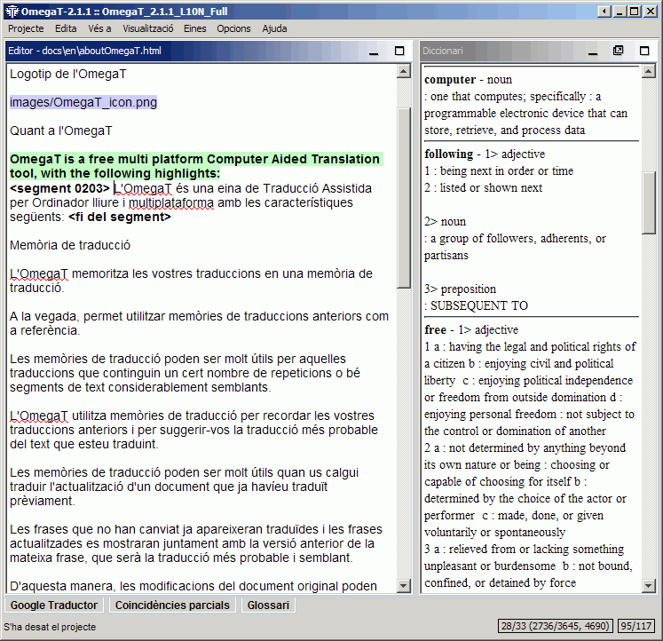

Diccionaris
Com baixar i instal·lar diccionaris
Els diccionaris a l'OmegaT estan basats en la plataforma de l'StarDict. Per instal·lar els fitxers necessaris, feu el següent:
- Cerqueu la combinació de llengües que us interessa. Per exemple, de la plataforma de l'StartDict o del FreeDict
- Baixeu el fitxer, que serà un arxiu tar (amb l'extensió tar.bz o tar.bz2).
- Utilitzeu l'untar o una eina equivalent (per exemple, el Winrar al Windows) per extreure'n el contingut a la carpeta «Dictionary» del projecte. Hi hauria d'haver tres fitxers, amb les extensions dict.dz, idx i ifo.
Tingueu en compte que, a més dels diccionaris de tipus «llengua de partida-llengua d'arribada», podeu accedir a diccionaris que contenen altra informació, com ara:
- Webster's Revised Unabridged
Dictionary (1913)
- Longman Dictionary of
Contemporary English
- Merriam Webster 10th dictionary
- The Britannica Concise
Encyclopedia
- etc.
Alguns diccionaris no tenen cap limitació pel que fa al seu ús (és a dir, són «d'ús lliure») i alguns com els esmentats abans, tenen llicència GPL. L'exemple següent mostra el diccionari Merriam Webster 10th dictionary «en acció»:

Problemes amb els diccionaris
Si la subfinestra Diccionari és buida, comproveu el següent:
- Els fitxers dict són a la carpeta especificada al fitxer del projecte (o en les seves subcarpetes)? Comproveu-ho a la finestra Propietats del projecte (mení Projecte → Propietats o
Ctrl+E).
- La carpeta conté tres fitxers amb el mateix nom i amb les extensions dict.dz, idx i ifo? Si només hi ha un fitxer amb el nom correcte, comproveu-ne l'extensió. Si el fitxer té l'extensió tar.bz, cal que el descomprimiu (amb l'untar).